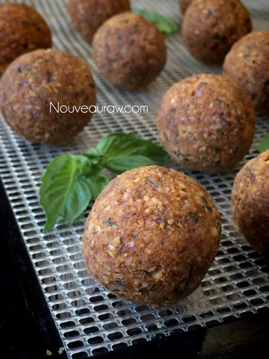

Spinach Sunflower “Cheese” Ravioli and “Meatballs”
~ raw, vegan, nut-free ~
Pack your bags, my friends… we are heading off to Italy!
First thing, let’s bite into an amazing ravioli that’ll transport you abroad without ever having to leave the comfort of your home. With fresh spinach folded into a creamy blend of sunflower seed cheese, all wrapped in a delicate, thin coconut “dough”—this raw ravioli is goodness at its finest.
But the experience doesn’t stop there; our journey has just begun. To complement the rich “cheese” ravioli, we are going to top it with a generous dollop of Sun-Dried Tomato Pesto. The robust flavor of sun-ripened dried tomatoes is highlighted with extra virgin olive oil, balsamic vinegar, fresh basil, and garlic.
Are your taste buds screaming with desire yet? To round (literally) out this amazing dish, we are going to top it off with an Italian “meatball.” But this isn’t just any meatball… these moist, soft, raw, and vegan meatballs will bring everyone back to the table for seconds.
This recipe may seem long and complicated, but it’s not. There are several components to create this grand-all-end-all meal, but you can always choose to just make a few of the components as time and ingredients on hand allow.
For starters, the base of this dish is the Spinach Sunflower “Cheese” Ravioli. Below I shared how you can make your own coconut wraps or where you purchase them. To save time, order some of the pre-made ones and keep them on hand. I have tested a few brands and really like the ones listed below. I noticed with this brand that I don’t taste the coconut, which is odd in itself because that is all they are made from. :)
I had a lot of fun making these, and below I share some photos of two different styles that I made… hoping to inspire you. :) All of the wonderful flavors really play off of each other. The rich, creaminess of the cheese filling… the robust tang of the tomato pesto and the “meatiness” of the “meatball”… well, it just rounds it all out (I just couldn’t resist hehe).
The “cheese” filling makes 4 cups worth, which is 64 raviolis, using 1 Tbsp of filling per wrap. This quantity would be great for parties and gatherings. If so, you will want to double if not triple the pesto and “meatball” batters. Otherwise, you can always put some of the filling aside and use it as a spread on crackers or try my Spinach & Sunflower Cheese Manicotti or the Spinach Basil “Cheese” Calzone.
If you are looking to impress some guests or even yourself… I encourage you to give this recipe a try. I truly am in awe myself just how delicious and Italian it is. Please let me know what you think by commenting below. Many blessings, amie sue
Spinach Sunflower “Cheese” – yields 4 cups:
- 2 cups raw sunflower seeds, soaked
- 1/2 cup + 2 Tbsp water
- 1/2 cup lemon juice
- 1/4 cup nutritional yeast
- 1 Tbsp chickpea miso
- 1 Tbsp raw coconut vinegar
- 1 1/2 Tbsp Italian Seasoning
- 3 small cloves garlic
- 1/2 tsp Himalayan pink salt
- 8 cups baby spinach
- 1/2 cup fresh basil
Coconut wraps:
- 2 cups young Thai coconut meat
- 1 1/2 cups coconut water
- 1/4 tsp Himalayan pink salt
- OR use store-bought raw coconut wraps (here)
Sun-Dried Tomato Pesto:
- 2 cups diced, fresh tomatoes
- 1 cup sun-dried tomatoes
- 1/4 cup water
- 3 Tbsp cold-pressed olive oil
- 1 Tbsp raw coconut vinegar
- 2 tsp balsamic vinegar
- 2 tsp dried oregano
- 1 tsp raw agave nectar
- 1 small garlic clove
- 10 large basil leaves
Italian herbed “meatballs” – makes 12
- 1 cup raw sunflower seeds or almonds, soaked & dehydrated
- 2 Tbsp nutritional yeast
- 1 Tbsp Italian herbs
- 1/2 tsp Himalayan pink salt
- 1/4 cup Sun-dried Tomato Pesto
- 2 tsp raw coconut vinegar
- 3 Tbsp fresh, chopped basil
- 1/4 cup diced red onion
Optional toppings:
Preparation:
“Cheese”:
- After soaking the sunflower seeds, drain and discard the soak water. Place the sunflower seeds in a high-powered blender.
- Soaking the sunflower seeds not only softens them for blending but also reduces the phytic acid which will make them wiser to digest.
- If you already have soaked/dehydrated seeds, you don’t have to re-soak them unless you don’t have a high-powered blender, then I would soak them once more to soften them for blending purposes.
- Add the water, lemon, nutritional yeast, miso, coconut vinegar, seasoning, garlic, and salt. Blend until creamy. Place in a large mixing bowl.
- If you own a Vitamix, you will want to use the tamper to help push the ingredients into the blades.
- If you don’t own a high-powered blender, you will need to stop the machine often to scrape the sides, pushing the mixture into the blades.
- In a food processor, fitted with an “S” blade, process the spinach and basil in two batches, pulsing it to breakdown but not purée it. Add to the bowl with the sunflower cheese and mix well. Set aside.
Coconut wraps:
- You can purchase raw coconut wraps (here) if you are short on time or resources. The store-bought wraps will make; you triangle ravioli or 2 of the circular ones. So buy accordingly.
- To make homemade wraps: Place the coconut meat, water, and salt in the blender. Blend until creamy smooth, you don’t want it lumpy or gritty.
- Pour the batter onto the non-stick sheet that comes with the dehydrator. Spread it evenly across the sheet into one large square.
- Spread it about 1/4″ thick, if it’s too thin, it will tear easily.
- You will cut it into quarters after it has dried.
- Dry at 115 degrees (F) for roughly 4 hours or until it is dry enough to peel off. Flip over onto the mesh sheet and dry for about 1 hour or until it isn’t tacky to touch.
- Store in a large zip-lock bag, placing parchment paper in between each piece.
Assembly:
- Cut the coconut wraps into 4 squares. You can also make them larger; it’s up to you.
- Place 1 Tbsp of cheese filling in the center of each square.
- Spread the filling out, leaving 1/4″ free of filling all around the edge of the coconut wrap.
- Dip your finger in water and wet all four sides of the wrap.
- Fold the wrap in half, going from tip to tip (see photo below).
- Gently keep pressing the two sides together, creating a sealing.
- These can be enjoyed as is or dehydrated to deepen the rich flavors and give it the appearance of being cooked.
- Place on the mesh sheet that comes with the dehydrator and dry at 145 degrees for 1 hour then reduce to 115 degrees (F) for 4-6 hours.
- Store leftovers in the fridge in an airtight container. Lay them in single rows with parchment paper in between, so they don’t stick to one another.
Sun-Dried Tomato Pesto
- I used sun-dried tomatoes that were not soaked in oil. If you don’t have a high-powered blender such as a Vitamix or Blendtec, I recommend re-hydrating the dried tomatoes in enough water to cover them. Let them sit for about 15 minutes or until soft.
- Drain the excess water from them when ready to use.
- You can use the soak water in place of the plain water.
- Place the fresh and dried tomatoes, water, olive oil, vinegar, oregano, agave, garlic, and basil leaves, blending until smooth.
- You can hold off on the agave, taste testing to see if it is needed or desired.
- Store leftovers in the fridge for 2-3 days.

Italian herbed “meatballs”:
- I made 12 meatballs and one small taste tester.
- In a food processor, fitted with an “S” blade, combine the sunflower seeds, nutritional yeast, Italian herbs, and salt. Pulse together mixing all the dry ingredients together.
- I always soaked and dehydrate my nuts and seeds, having them ready for recipe inspiration. I soak them to reduce the phytic acid which, again, makes it easier for me to digest.
- Add the pesto, vinegar, basil, and red onion. Pulsing everything together until well mixed.
- Form into 1 Tbsp-sized balls and optionally dehydrate at 115° F for 6 hours or until they are slightly dry on the outside and soft on the inside.
The Institute of Culinary Ingredients™
- If you are new to using Nutritional Yeast, click (here).
- What is Himalayan pink salt and does it really matter? Click (here) to read more about it.
- What is miso? Click (here) to learn more about it.
© AmieSue.com